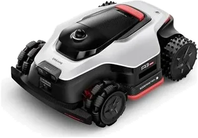
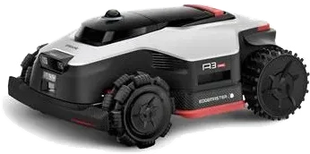

Dreame A1 Pro
8,0/10
1 049 €
Carte du jardin en 20 minutes, sans antenne à planter.
- 1 200 m²
- pente 45 %
- sans câble
prix du 15/11 à 7 h · Lire l’avis
Maquette V2 · prix, notes et dates d’exemple · storyboard
Accueil › Marques › Dreame

La marque chinoise a mis le LiDAR dans des robots à moins de 1 100 €. Son service après-vente en France reste plus lent que celui de Husqvarna.
8,0/10
1 049 €
Carte du jardin en 20 minutes, sans antenne à planter.
prix du 15/11 à 7 h · Lire l’avis

7,8/10
2 199 €
4 roues motrices pour les terrains en pente.
prix du 15/11 à 7 h · Lire l’avis

7,5/10
2 699 €
Le même, avec une batterie pour 5 000 m².
prix du 15/11 à 7 h · Lire l’avis
Le duel le plus lu
LiDAR contre réseau de réparateurs
Deux façons de se passer du câble
Le robot repart par transporteur vers un centre agréé. Comptez deux à trois semaines d’après les retours de propriétaires que nous avons lus.
Oui pour la tonte et la carte. Le suivi antivol par réseau mobile est offert trois ans, puis payant.